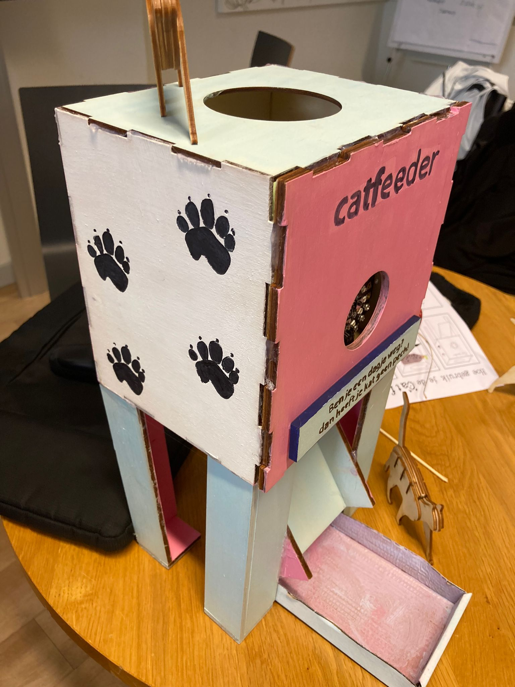

catfeeder
Ik heb in de eerste periode van het eerste jaar een automatische voerbak voor een kat gemaakt. De bedoeling van de opdracht was om met je groepje een probleem van iemand uit je team op te lossen. Bij ons was het probleem dat de kat weleens alleen thuis was en dan geen eten kon krijgen of alles in één keer zou opeten. Hiervoor hebben wij een dispenser gemaakt met een timer, daardoor werd er om een bepaalde tijd eten gegeven aan de kat.